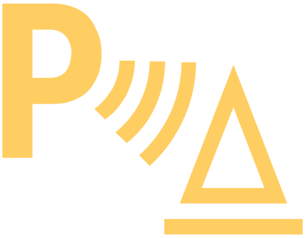

Aide au stationnement Park Pilot perturbé

allumé
Message concernant l’indisponibilité ou la restriction des fonctions
Coupez et remettez le contact.
Si le système n’est toujours pas disponible, demandez l’aide d’un spécialiste.
Toutes les zones numérisées ne sont pas affichées dans l’écran d’Infodivertissement après la mise en marche
Déplacer le véhicule de quelques mètres vers l'avant ou vers l'arrière.
Si les zones numérisées ne sont toujours pas disponibles, faites appel à un atelier spécialisé.